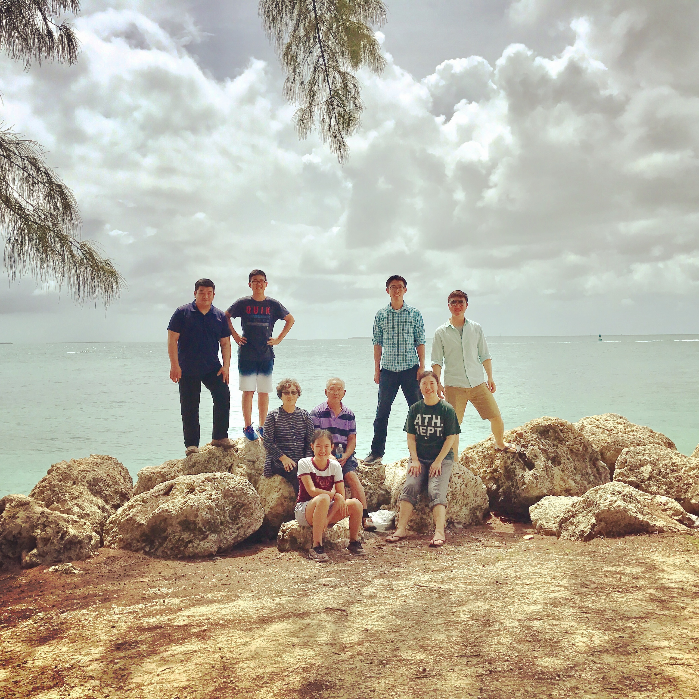

The Cha's
The above is a typical response of most foreigners when they see the tea and sweets put out before dinner. Those brown jellylike edibles that look like chocolate fudge are made from sweetened beans and are called yōkan. They are delicious with o-cha (green tea).
But before you eat the yōkan and drink the tea, refresh yourself with the chilled, moist hand towel the hostess is offering to you. It is called an o-shibori, literally meaning “squeezed out.” In the winter, guests are served steaming hot towels.

Family a is defined as a household, extentions or people who have same type of genetics or share memories from the years they have lived or spent together. Even though we had been far away in distance, no doubt our bond as a family has been strong that kept us all united.